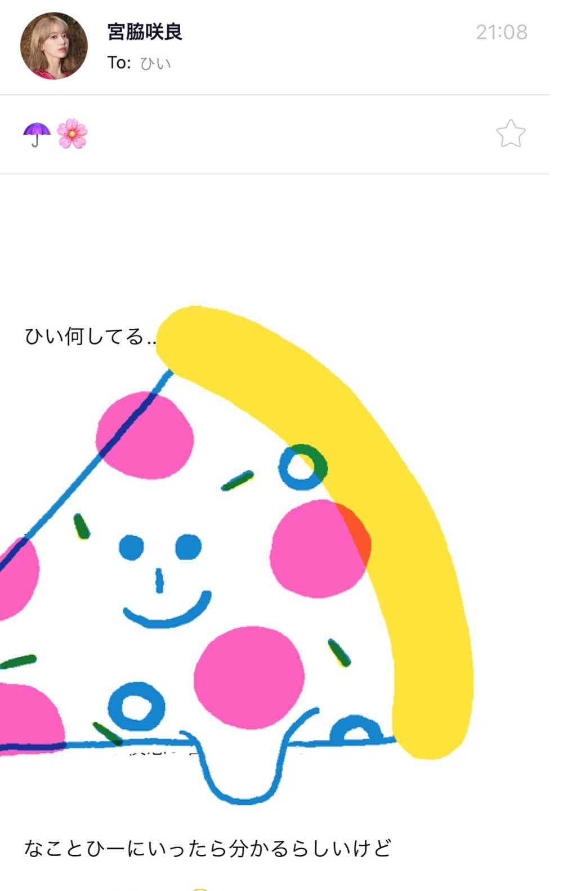
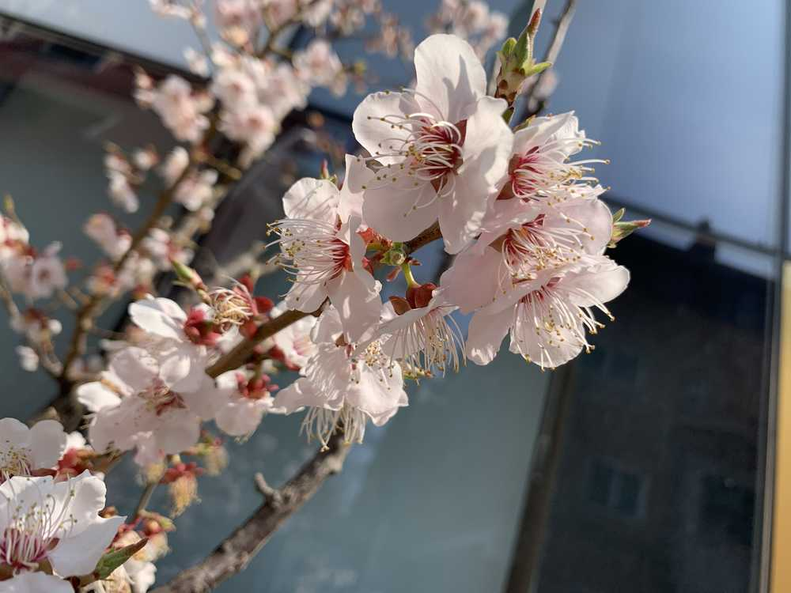

ついにこの目で…😳
ひいだよ🍓

さくちゃんのメールで
噂の「ひー」を見ました😳😳😳
直で呼んでくれるときは「ひぃちゃん」だけど
そのギャップがまたいいのかもしれません😇笑
いつか生で
聞いてみたい気もするけど😆ㅎㅎㅎ
天気良くなりました〜☀️
でもペディン着てきて正解だった😊
だけどさっきペディン着た状態で
寒いって奈子ちゃんに言ったら
びっくりされたよ😦💥
ひいはやっぱり冷え性🤧
では質問答えます🧸
Q. 納豆になにか入れて食べますか？
A. 絶対お酢！！
何回も言ってると思うけど本当にオススメ！
やってほしいから何回も言う！ㅋㅋㅋ
混ぜるとふわふわになるし
とってもクセになる☺️
騙されたと思ってやってみて💁🏻♀️
ただし匂い注意⚠️笑
よく「納豆カレー」を耳にするけど
あれは美味しいのか🤔🤔🤔
流石にちょっと怖くて
チャレンジできない。。
納豆オムレツは美味しいよ🤤
「納豆カレー」食べたことある方
ぜひ教えてください🙋🏻♀️🙋🏻♀️🙋🏻♀️
あ。そろそろ携帯の充電ないから
してきますね〜🔋
날씨가 좋아졌네요!!!
너무 좋아아아아😆
근데 오늘 패딩 입고 와서 정답이었다👍🏻👍🏻👍🏻
잘 했어 토미야😎
그러면 질문 2개만!!!
Q. 커피에 설탕이나 시럽은 안넣어요??
A. 당연히😊👍🏻
우유도 안 넣어요🥛
근데 진~~~~짜 가끔 두유를 넣고 마셔요✌🏻
Q. 히짱도 프메 구독 한다고 했잖아요?
12명 모두 구독하나요??
A. 네!! 12명 다😉
너무 재밌어요😊😊😊
아 이제 배터리가 없네...
충전하고 올게용🔋

ついに桜を見れた🥺🥺🥺
ばいばーい👋🏻
ひいまる🥟